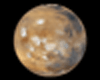

The Inner Planets (Terrestial)
The inner planets are called terrestial planets. The word terrestial comes from the Latin word, "terra," which means earth or earth-like. These planets are dense, solid, rocky and have a metal core. These are the first four planets closet to sun: Mercury, Venus, Earth, and Mars.
Mercury is the first planet. It is also the smallest planet in our solar system. Because it is so close to the sun it is very hot. It is also the fastest planet orbiting the sun, taking just over 58 days days. It rotates on its axis once every 88 earth days.
Venus is next. It is the closest planet to earth and about the same size. It is extremely hot and has constant thunderstorms. It's surface is covered in lava from volcanoes. It rotates on its axis very slowly (and in the opposite direction of all the other planets. One day on Venus is equal to 243 days on Earth!
Earth is an ocean planet, the third from the sun. It has lots of water and is the only planet that we know of that has life on it! It is the densest planet. It only has one moon. It's orbit around the sun is elliptical in shape. This and its tilt on it's axis cause the seasons.
Mars is the fourth planet from the sun. It is extremely cold. It also has lots of craters. Scientists think these crater were formed when meteorites hit it. Mars also has tallest mountains and deep valleys.


| Inner Planets: Plant Profile | ||||
|---|---|---|---|---|
| Mercury | Venus | Earth | Mars | |
| Mass (kg) | 3.3 x 1023 | 4.87 x 1024 | 5.98 x 1024 | 6.42 x 1023 |
| Diameter (km) | 4,879.4 | 12,104 | 12,756 | 6,787 |
| Mean density (kg/m3) | 5,420 | 5,250 | 5,520 | 3,940 |
| Escape velocity (m/s) | 4,300 | 10,400 | 11,200 | 5,000 |
| Average distance from Sun | 0.387 AU | 0.723 AU | 1 AU | 1.524 AU |
| Rotation period | 58.65 | 243.02 (retrograde) | 1 (23.93 hours) | 1.026 |
| Revolution period | 87.97 | 224.7 | 365.26 | 686.98 |
Click the planets in our Solar System to learn MORE!